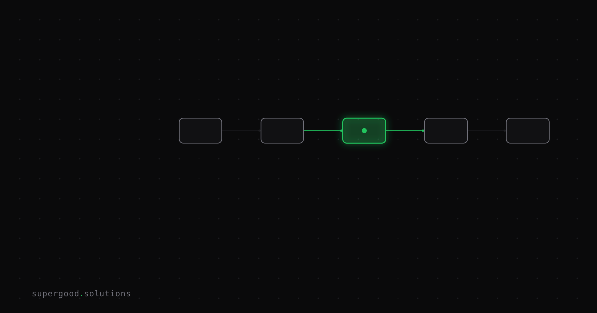

Every AI Transformation in Your Pipeline Loses Something
TL;DR: There is no such thing as a lossless AI text transformation — summarize, extract, reformat, translate, each step throws information away. Chain enough of these steps in an enterprise pipeline and the loss compounds invisibly, until it surfaces as a wrong downstream decision nobody can trace back to its source.
Key Insight
Every step in an LLM pipeline is a compression step, and compression is lossy by definition. Simon Willison put this well when he described an LLM as a "lossy encyclopedia": it has a huge array of facts compressed into it, but the compression loses detail, the same way Ted Chiang once called ChatGPT "a blurry JPEG of the web." The lossiness isn't a bug you patch — it's the mechanism by which the model works at all. A model that remembered every training document verbatim wouldn't generalize; it would just be a search index.
The part enterprise teams miss is that this same lossy-compression dynamic applies to every intermediate step you build, not just the base model. Summarize a support ticket, then extract entities from the summary, then reformat those entities into a CRM field, then translate the field for a regional team — each hop is its own act of compression, and each one discards a little context that seemed irrelevant at that step but turns out to matter three hops later.
Why Teams Miss This
Most teams evaluate each pipeline stage in isolation. The summarization prompt gets tested against ten tickets and looks great. The extraction step gets tested against ten summaries and looks great. Nobody tests the whole chain end-to-end against the original ticket, because that's harder to set up and the individual stages already "pass."
This is the same blind spot that shows up in a multi-hop game of telephone: each translation is locally faithful, but the accumulated drift is only visible when you compare the last output to the first input — a comparison most pipelines never run. The failure mode isn't a single bad transformation; it's five adequate transformations compounding into a decision that's confidently wrong. A customer's "this is urgent, my production system is down" survives a summarization step as "customer reported downtime," survives extraction as severity: medium, and survives reformatting into a ticket that a human triages three hours later than they should have.
How to Actually Do It
You cannot make the transformations lossless, but you can make the loss visible and bounded.
- Treat every hop as a data-loss checkpoint, not a black box. Log the input and output of each transformation stage separately, not just the final pipeline output. If you can't inspect what got dropped at step 3, you can't debug why step 5 is wrong.
2. Carry the original alongside the derived artifact, not instead of it. Don't replace the raw ticket text with the summary in your data model — keep both, with the summary as a pointer/annotation. Willison's own fix for LLM lossiness generalizes here: "the way to solve this particular problem is to make a correct example available to it" — give the model (and the humans reviewing its output) access to ground truth, don't ask them to trust a compressed copy of a copy.
3. Put a lossiness budget on high-stakes fields. Fields that drive automated decisions (severity, priority, dollar amount, legal obligation) should either skip the lossy chain entirely (extract directly from the source) or get a verification step that checks the final value against the original text before it's acted on.
4. Test the chain, not the links. Build a small eval set of 20-30 real inputs, run them through the entire pipeline, and diff the final output against the source document by hand. This catches compounding drift that per-stage unit tests never will.
# Minimal end-to-end drift check for a summarize -> extract -> format pipeline
def check_pipeline_drift(raw_input: str, final_output: dict, source_fields: list[str]):
"""Flag when a high-stakes field's derived value can't be traced
back to explicit language in the original source."""
flags = []
for field in source_fields:
value = str(final_output.get(field, "")).lower()
if value and value not in raw_input.lower():
flags.append(f"{field}={value!r} not directly grounded in source text")
return flagsThis isn't a substitute for real evals — it's a cheap tripwire that catches the worst compounding-loss cases (a severity or amount field that the model inferred rather than extracted) before they hit production.
What We've Learned
The next experiment worth running on any multi-stage LLM pipeline: pick your highest-stakes field, trace it back through every transformation to the original source text, and see how many hops it actually survived unchanged. If the answer is "zero, but it got reworded twice," you've found your next lossiness budget to enforce.
Sources
- Simon Willison's "lossy encyclopedia" analogy: simonwillison.net/2025/Aug/29/lossy-encyclopedia
- Ted Chiang, "ChatGPT Is a Blurry JPEG of the Web," The New Yorker: newyorker.com/tech/annals-of-technology/chatgpt-is-a-blurry-jpeg-of-the-web
Have a specific workflow in mind?
Bring it to a Quick Scan — a live working session where we'll tell you honestly whether it should be an agent, a workflow, or left alone, before you spend a dollar building it. You get 3 prioritized recommendations on the call, a one-page summary after, and the $500 credited toward any engagement within 30 days.
Get new posts + practical agent-ops notes
One email when something new goes up. No nurture sequence, no spam — unsubscribe whenever you want.